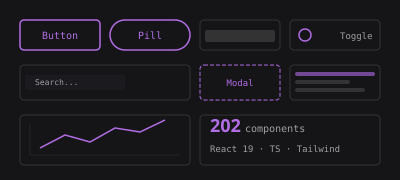
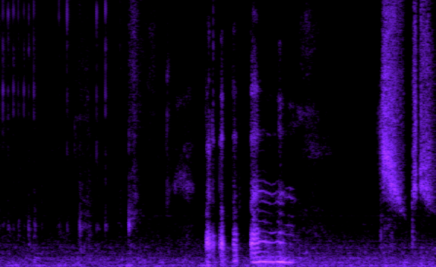
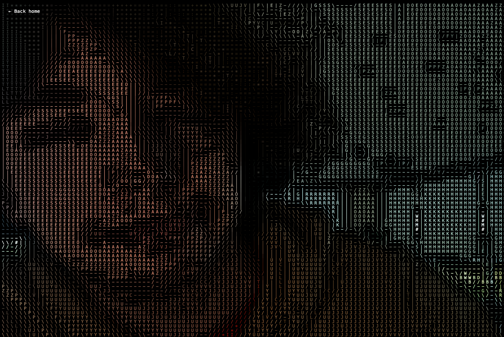
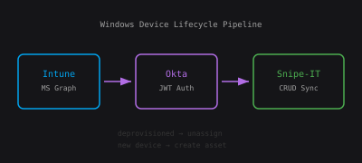
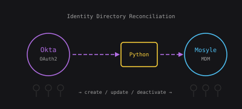
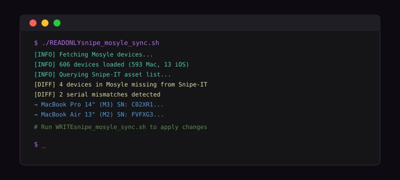
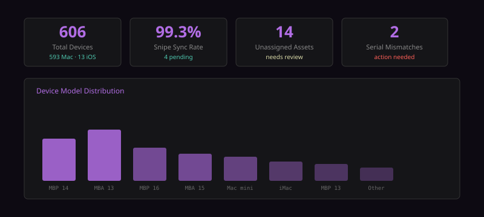
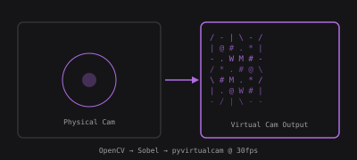

Welcome to my portfolio! Here you'll find a collection of my projects, experiments, and work in the fields of computer science, development, and mathematics. Feel free to explore and reach out if you have any questions or opportunities for collaboration.
A collection of real-time computer vision and audio experiments and more built with JavaScript.

202-component design system built with React 19, TypeScript, and Tailwind. Live gallery showcasing buttons, inputs, charts, data display, animations, commerce widgets, navigation, and layout primitives — all from scratch.
React 19 · TypeScript · Tailwind · Next.js
Real-time FFT audio visualizer using the Web Audio API. Experimenting with different audio processing techniques and visualizations. Drawing inspiration from bird call analysis.
JavaScript · Web Audio API · Canvas · FFT
Live webcam feed running manual Sobel matrix convolutions mapped to ASCII characters. Also created a python version of the same concept using OBS and OpenCV so that you can run it on your own machine as your webcam.
JavaScript · Canvas · Sobel Convolution · getUserMediaThe site you're looking at. Custom dark-theme design with CSS variables, sticky scroll containers, carousel with vanilla JS, responsive layout, SVG project previews, and a Vite build pipeline. No frameworks — just HTML, CSS, and JS.
Vite · HTML · CSS · Vanilla JS · SVGA collection of terminal-based tools/applications and more built with C, Java, Go, Python.

Windows device lifecycle pipeline. Fetches all Intune managed devices via MS Graph, cross-references Okta for deprovisioned users, then creates/updates/unassigns assets in Snipe-IT. Handles CPU, RAM, and storage telemetry sync across 250+ Windows endpoints.
Zsh · MS Graph API · Okta JWT · jq · Snipe-IT API
Python automation that authenticates to Okta via OAuth2 private-key JWT, pulls the full user directory, and reconciles it against Mosyle MDM — creating, updating, or deactivating user records to keep the Apple fleet's identity layer in sync.
Python · PyJWT · Okta API · Mosyle API · 1Password CLI
Automated reconciliation pipeline for IT asset management across 606 devices. Bash/Python scripts query Mosyle MDM and Snipe-IT APIs, diff device records by serial number, and apply inserts/updates. Built with DRY (read-only) and WRITE variants for safe iteration.
Bash · Python · Mosyle API · Snipe-IT API · jqReusable secrets-management architecture used across all sync scripts. Credentials are never stored on disk — every API key, JWT private key, and password is fetched at runtime via op read from a vault, enabling safe git commits and zero-env-file deployments.
A collection of data analysis and visualization projects built with Python and other tools.

Python pipeline that pulls live asset data from Snipe-IT and Mosyle, computes fleet-wide stats (device counts, sync coverage, unassigned assets, serial mismatches), and surfaces them as a structured dashboard. Built to support daily inventory ops for a 1000+ device fleet.
Python · Snipe-IT API · Mosyle API · Data Visualization
Standalone OBS virtual camera that applies real-time ASCII art and Sobel edge detection to your webcam feed. Uses OpenCV for capture and convolution, pyvirtualcam to broadcast as a system camera, and NumPy for fast per-frame matrix ops at 30fps.
Python · OpenCV · pyvirtualcam · NumPy · Sobel KernelsWireless standards, infrastructure auditing, and network automation.
Freelance web development for external clients.
Selected coursework from my Computing degree at the University of Guelph.
Implementations in C and Python covering linked lists, binary trees, hash tables, sorting algorithms, and graph traversal. Focus on time/space complexity analysis and modular design.
C · Python · Time Complexity · Modular DesignProjects in Java applying OOP principles — inheritance, polymorphism, encapsulation. Includes a multi-class simulation.
Java · OOP · Inheritance · Polymorphism